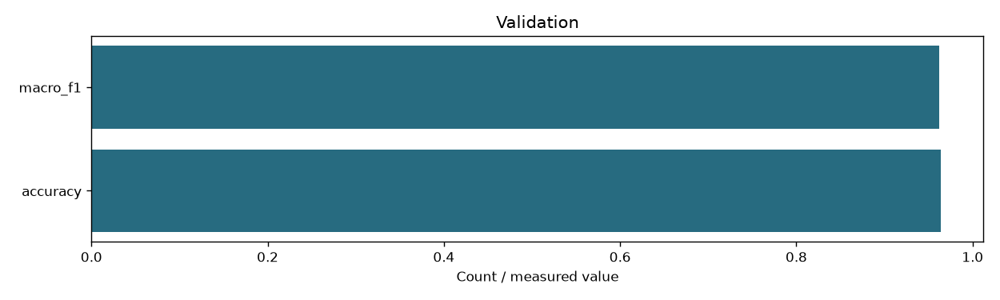

| schema | content-centroid-v2 |
|---|---|
| index_fingerprint | 6243a1e92060be87bf31c54ccd305fb375d9d3482a75b317b51886ef24f198cf |
| classes | ['C01', 'C02', 'C03', 'C04', 'C05', 'C06', 'C07', 'C08', 'C09', 'C10', 'C11', 'C12', 'C13', 'C14'] |
| class_names | {'C01': 'cloud-platforms', 'C02': 'ai-ml-compute', 'C03': 'mlops-orchestration', 'C04': 'programming-languages', 'C05': 'databases-storage', 'C06': 'search-engines', 'C07': 'messaging-rpc', 'C08': 'distributed-data-processing', 'C09': 'application-frameworks', 'C10': 'containers-orchestration', 'C11': 'devops-build-release', 'C12': 'os-networking-web', 'C13': 'security-identity', 'C14': 'observability'} |
| training_csv_sha256 | eec3f80cecdace1470e4aeee2fbcafb3fc88e5ea62a8ce987c35c971d4b8f1d9 |
| classes_sha256 | edd68eb1ff4a87d1313f73a4a6539a95c62ea44288f6f5f2dc29e85340026056 |
| training_documents | 140 |
| validation | {'accuracy': 0.9642857142857143, 'macro_f1': 0.9619047619047619, 'per_class_f1': [0.8, 1.0, 1.0, 1.0, 1.0, 1.0, 1.0, 1.0, 1.0, 1.0, 0.6666666666666666, 1.0, 1.0, 1.0], 'confusion': [[2, 0, 0, 0, 0, 0, 0, 0, 0, 0, 0, 0, 0, 0], [0, 2, 0, 0, 0, 0, 0, 0, 0, 0, 0, 0, 0, 0], [0, 0, 2, 0, 0, 0, 0, 0, 0, 0, 0, 0, 0, 0], [0, 0, 0, 2, 0, 0, 0, 0, 0, 0, 0, 0, 0, 0], [0, 0, 0, 0, 2, 0, 0, 0, 0, 0, 0, 0, 0, 0], [0, 0, 0, 0, 0, 2, 0, 0, 0, 0, 0, 0, 0, 0], [0, 0, 0, 0, 0, 0, 2, 0, 0, 0, 0, 0, 0, 0], [0, 0, 0, 0, 0, 0, 0, 2, 0, 0, 0, 0, 0, 0], [0, 0, 0, 0, 0, 0, 0, 0, 2, 0, 0, 0, 0, 0], [0, 0, 0, 0, 0, 0, 0, 0, 0, 2, 0, 0, 0, 0], [1, 0, 0, 0, 0, 0, 0, 0, 0, 0, 1, 0, 0, 0], [0, 0, 0, 0, 0, 0, 0, 0, 0, 0, 0, 2, 0, 0], [0, 0, 0, 0, 0, 0, 0, 0, 0, 0, 0, 0, 2, 0], [0, 0, 0, 0, 0, 0, 0, 0, 0, 0, 0, 0, 0, 2]], 'documents': 28} |
| secondary_margin | 0.03 |
| max_memberships | 2 |
| document_representation | Equal available-zone normalized means of normalized windows |
| label_scope | Reviewed primary content classes; secondary membership is a similarity heuristic |
| documents | 68414 |
| memberships | 88178 |
